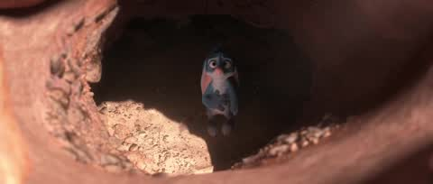
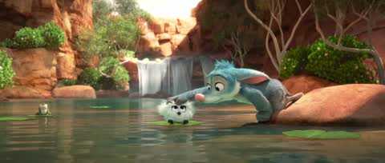
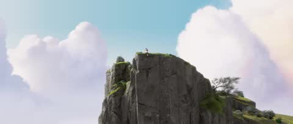
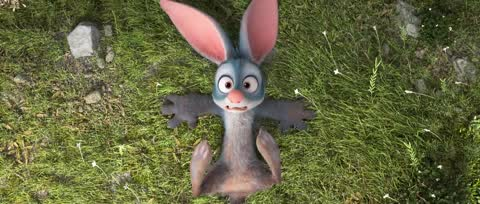

Bilby
Маленький ворчун, пушистый птенец и самая опасная пустыня на свете
Билби живёт один в австралийской пустыне. Однажды к нему прибивается птенец альбатроса, и ворчуну приходится вести малыша через все опасности к морю.
режиссёра, и для всех троих это первый фильм
два фестивальных приза и место в шорт-листе «Оскара»
О чём этот мультик
Билби — маленький ушастый зверёк из австралийской пустыни. Он живёт один, и ему нужны только ягоды и своя нора.
Однажды рядом с ним падает потерявшийся птенец альбатроса. Билби хочет от него отделаться, но малыш ходит за ним по пятам. И каждый раз, когда птенцу грозит беда, Билби бросается его спасать.
Так он проводит птенца через всю пустыню к морю, где живут альбатросы. Там малышу пора учиться летать, а Билби — отпустить того, к кому он привязался.
А дальше — весь сюжет по главам. Листай стрелками или нажимай на кадры внизу: фон страницы будет меняться вместе с главой.
Как появился «Билби»
Сначала DreamWorks делала большой мультфильм-мюзикл «Larrikins» про австралийских зверей. В 2017 году его отменили. Герои уже были нарисованы, и трое аниматоров решили дать им вторую жизнь в короткометражке.
Идею собрали всего за две недели. Австралию выбрали нарочно: создатели искали самое враждебное место, где всё вокруг хочет тебя съесть. А ещё на этом мультике студия проверяла свою новую технологию рендеринга.
- Большой фильм «Larrikins» отменяют.
- У DreamWorks появляется программа короткометражек. «Билби» — один из первых проектов.
- Мировая премьера на закрытии фестиваля анимации в Анси.
- Приз жюри SIGGRAPH и приз зрителей фестиваля в Палм-Спрингс.
- Шорт-лист «Оскара» и выход на YouTube-канале DreamWorks.
- Выходит на дисках вместе с «Как приручить дракона 3».
- Режиссёры
- Лирон Топаз, Пьер Перифель, Хуан Пабло Санс
- Продюсеры
- Келли Куни Чилелла, Джефф Херманн
- Музыка
- Бенджамин Уоллфиш
- Билби
- Дэвид П. Смит
- Птенец
- Ди Брэдли Бейкер
- Герои
- по персонажам Гарри Криппса




Билби — настоящий зверь: австралийское сумчатое, которое живёт в норах. Сейчас этот вид под угрозой исчезновения.
Кто есть кто
Что говорят о мультике
Твой отзыв
Отзывы сохраняются только в твоём браузере.
Маленький мультик с большим сердцем
«Билби» — очень милый и добрый мультик. Он идёт всего восемь минут, и в нём нет ни одного слова. Но всё и так понятно: по глазам, по ушам, по тому, как герои двигаются.
Сначала Билби совсем не хочет возиться с птенцом. Он просто хотел поесть ягод и спрятаться в норе. Но птенец такой беспомощный, что бросить его не получается. Мне понравилось, как Билби меняется: из ворчуна он становится настоящим заботливым другом.
Картинка очень красивая. Пустыня яркая и оранжевая, а в конце — зелёный утёс и синее море. Шерсть выглядит такой мягкой, что её хочется потрогать. Смешных моментов тоже много, особенно когда Билби спасает птенца от всех подряд.
Конец немного грустный, потому что птенцу пора улетать. Но потом становится тепло: он не забыл Билби. Для меня этот мультик про то, что любить кого-то — значит иногда его отпускать.
Жалко, что большой фильм отменили. Было бы здорово посмотреть полную историю про этих героев.